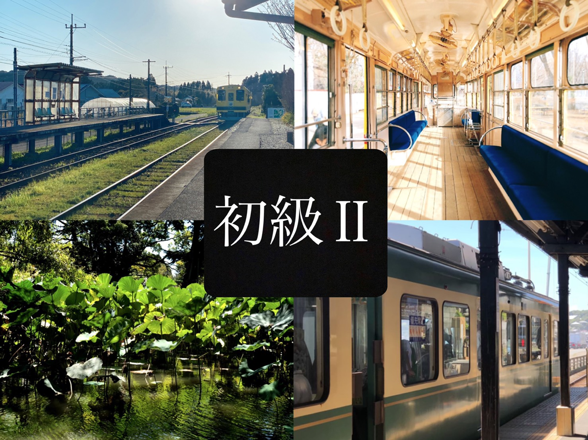
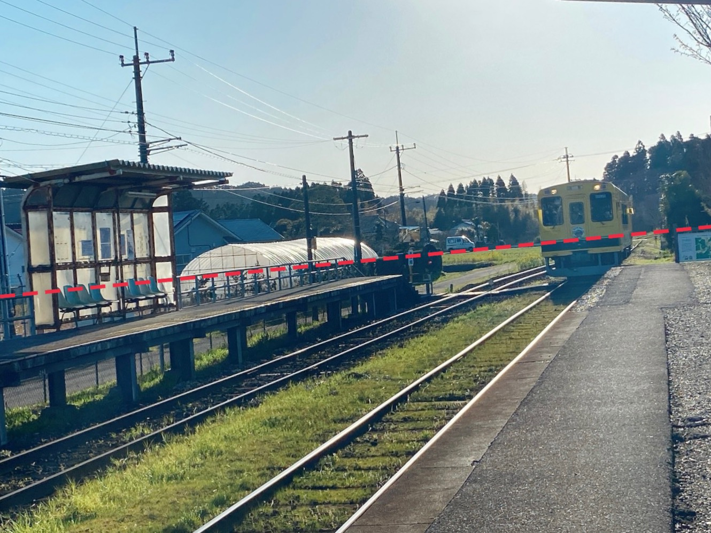
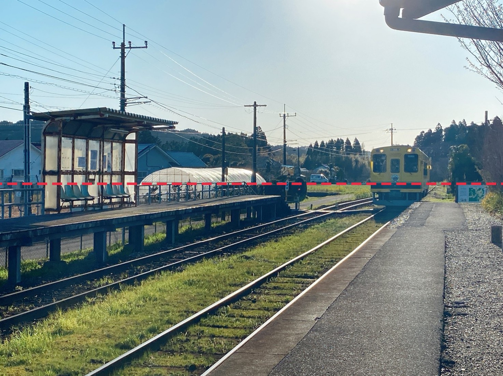
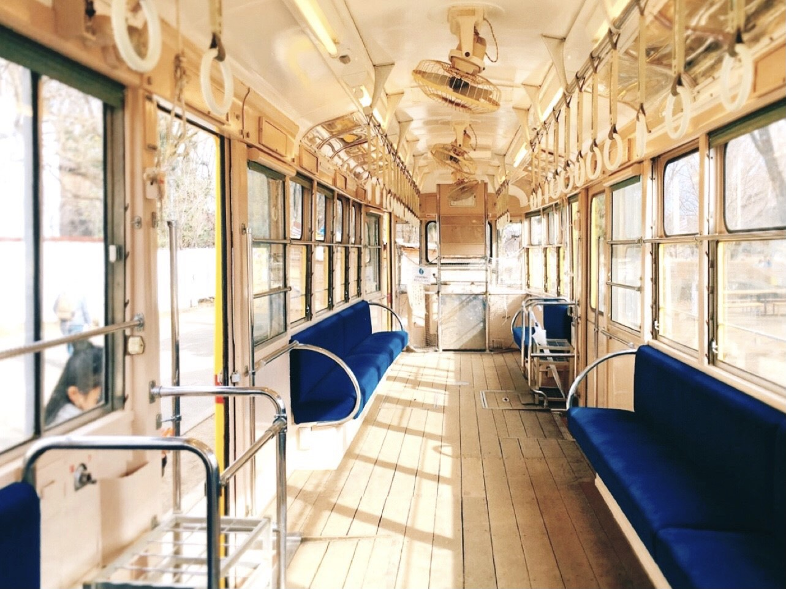
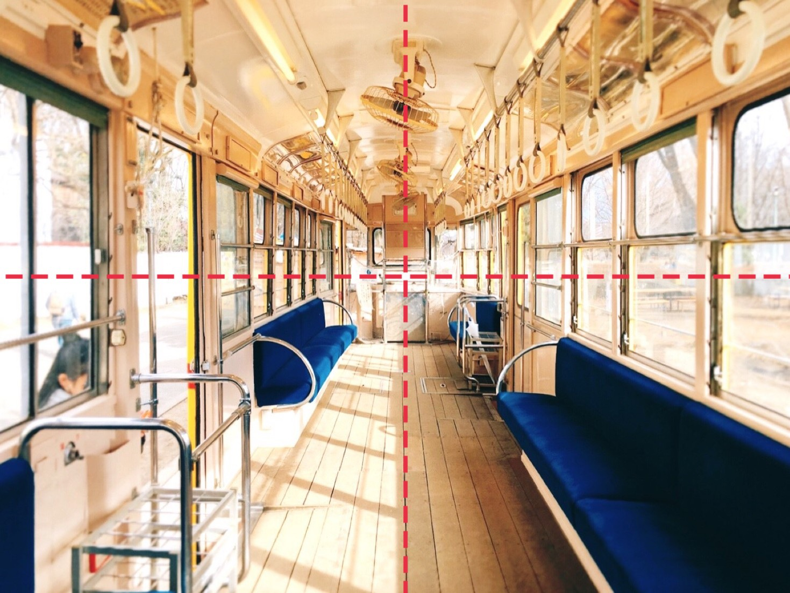
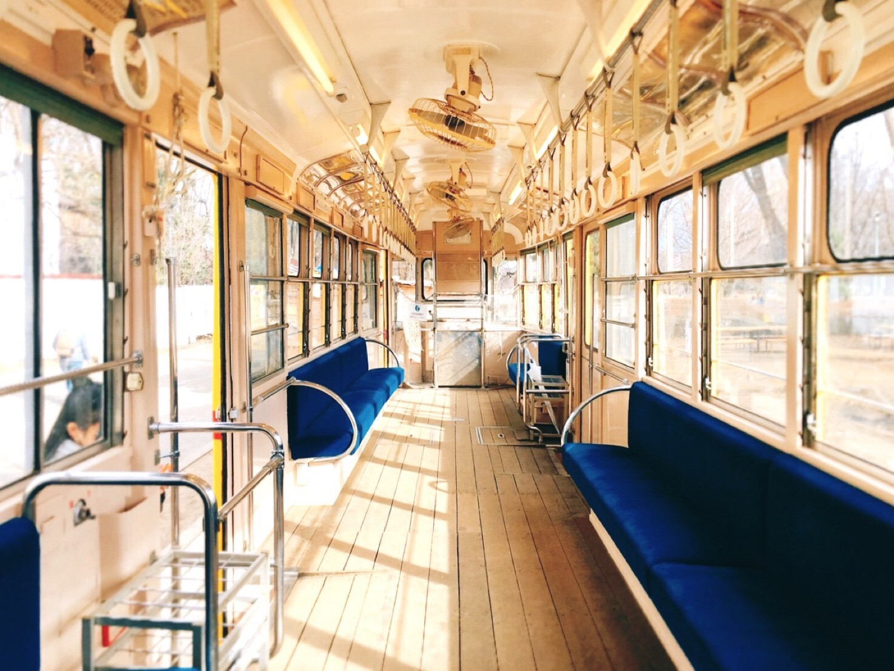

角度マスター

皆さんこんにちは。Nanaです。
今回は、写真の角度を調節してよりかっこいい写真の撮り方を紹介します。
ではさっそく、こちらの写真をご覧ください。
普通の写真ですね。こんな写真誰でも撮れます。

では、この写真の角度を調節してみましょう。
赤い点線に注意して見てみてください。

角度を調節してみました。
調節前は赤い点線が斜めになっていましたが。平行にすることで写真に奥行ができました。
この調節法は、実は絵の奥行を出す方法と同じなんです。
もし時間があれば、点線のように平行に線を引き、電車を中心に線路/棒を描いてみてください。

角度の調節方法
写真フォルダ→編集→右下✓マークの隣のアイコンを選択
点線部分を左右に動かすことで角度を調節することができます。

では次にこちらの写真をご覧ください。
まあ、これでも充分に綺麗な写真ですがもう少し撮り方を変えてみましょう。
またまた、赤い点線に注目してみてください。

電車内に奥行がでるように、左右の幅が対称になるように撮影してみました。
点線の交点部分に人物を置いたらかっこいい写真が撮れそうですね。

この方法は、iPhoneの機能というよりは技術的な方法です。
しかし、誰でも簡単に挑戦できます。
是非挑戦してみてください。
今回の講座で、写真の撮り方がかなり変わると思います。